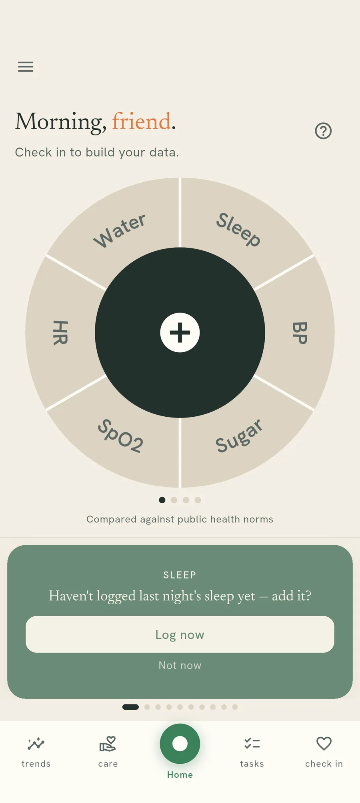
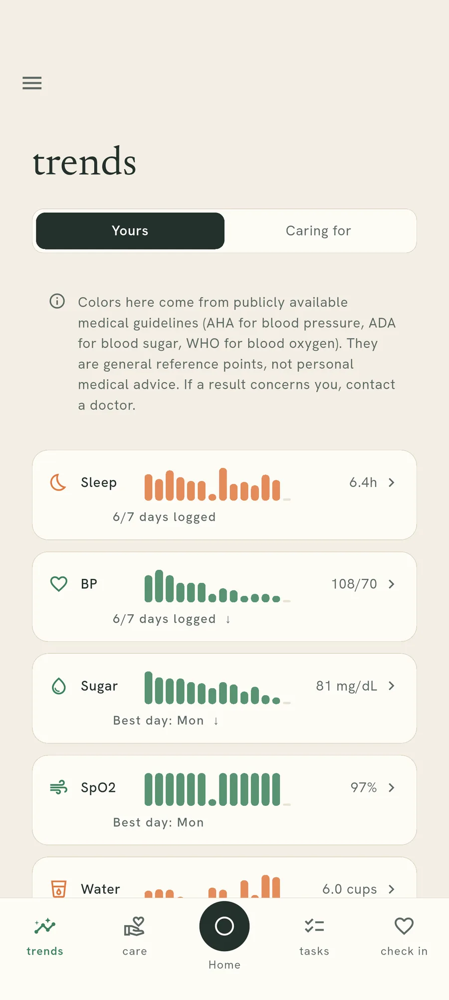
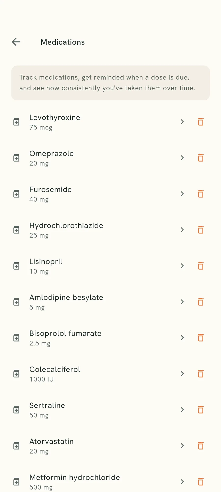
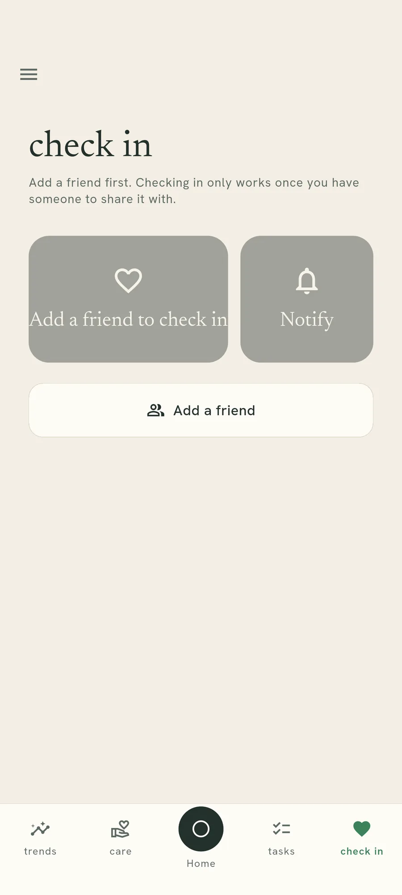

It is permanent
Leaked health information cannot be rotated, revoked or reissued. Once it is out, it is out — and it stays accurate about you for decades.
Android · no account · free to use
Most health apps ask for your name, your email address, and every reading you take — then keep all three together on their servers. This one keeps your readings in an encrypted file on your own phone, and never learns who you are.



No sign-up No email, no password, no name.
They see a tick Not your blood pressure.
Why bother
If a shopping site leaks your password, you spend an afternoon fixing it. Health data does not work like that. A record of a diagnosis, a mental-health note, a pregnancy, a blood sugar that has been climbing for a year — those follow a person for the rest of their life, and no reset link takes them back.
Leaked health information cannot be rotated, revoked or reissued. Once it is out, it is out — and it stays accurate about you for decades.
Health records sell for far more than card details, because they are richer, they do not expire, and they are useful to people who make decisions about your job, your cover, or your credit.
Most trackers need an account before they will show you anything. That account puts your email address in the same database row as everything you have ever recorded.
The safest health data in the world is the kind nobody collected.
The part general apps get wrong
Say your dad lives on his own. You would like to know he is doing all right today. He would rather you were not reading his blood sugar over breakfast every morning. Both of those are reasonable, and almost every tool makes you pick one.
A shared spreadsheet means he hands over the lot. A group chat means he types his numbers out where they sit on somebody else's server for good. Saying nothing means you find out something was wrong a fortnight late.
None of those is a privacy setting. They are three different ways of giving up.
Nearly all of the worry is answered by one bit of information: did he log today, yes or no. That is all a carer's screen shows here — a tick or a gap, per category, per day. No number appears anywhere on it.
When you genuinely do need a figure, you can ask for that one reading. It arrives only if he taps approve, it is encrypted on his phone before it leaves, and it is gone when the app closes. He can say no, and saying no tells you nothing more than that.

You can let one particular person see the names of your medicines and whether you took them — and not the next person. It is off until you turn it on, one medicine and one carer at a time, and switching the whole category off stops all of it at once.

On purpose
A lot of health apps grow until they want to be your calendar, your chat app and your social network too. Every one of those additions is another thing to move over to, another habit to break, and another copy of your life on somebody's server. We would rather do one job properly.
Every integration is one more company holding a copy. Not integrating is the feature.
The part most apps leave out
You should be able to check this rather than take our word for it. If somebody stole our entire database tomorrow, here is what would be in it.
What it would hold: random codes, which of those codes are linked to each other, the dates people checked in, a yes-or-no per category per day, and text that was encrypted on the phone that wrote it. Nothing in there names, contacts or locates a single person.
Getting going
No email address, no password, no verification code. Your phone makes up a random code for itself the first time you open the app, and that code is the only thing we ever know about you.
Sleep, blood pressure, blood sugar, oxygen, heart rate, weight, water, symptoms, periods, medicines — or just the two that matter to you. Everything else stays out of your way.
Add someone who looks after you and choose which categories they can see. They get a yes-or-no per day. You can turn any of it off again, and switching a category off removes its past days too.



Free, no account, and nothing about you on our servers worth stealing.
Your Health is a self-help tool for recording how you feel and keeping track of things over time. It is not a medical device. It does not diagnose, treat, cure, or prevent any illness, and it is not a substitute for professional advice. The colours shown against readings come from published general guidelines, not from anything personal to you. If a result worries you, speak to a doctor.